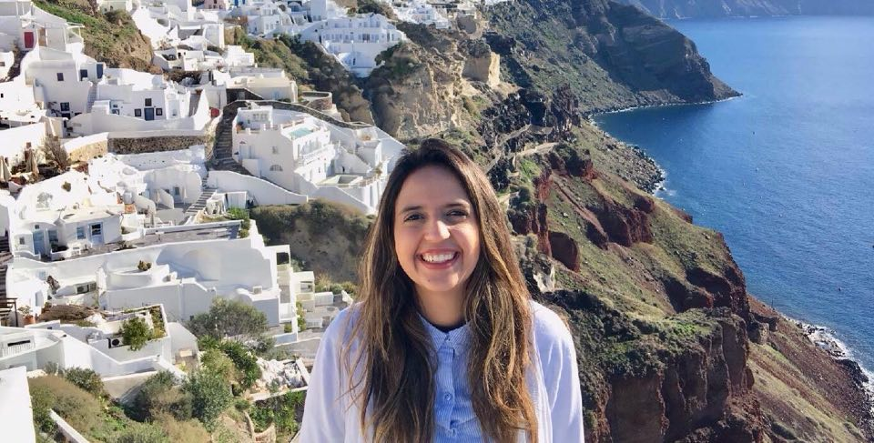

Quer acompanhar a jornada dessa Cearense arretada pelo mundo?
Apertem os cintos e aproveitem o voo!

Uma Cearense pelo Mundo - 18 Países e contando...
Motivada sempre a buscar o que sonho. Aos 17 anos fiz meu primeiro intercâmbio e vi o quanto o mundo é grande, desde então aprendi definitivamente a pensar fora da caixa. Sou jornalista e extremamente apaixonada por viajar pelo mundo. Quando pequena eu brincava de fingir que entrava na casa das pessoas e descobria quem elas eram e o que faziam. Essa era minha brincadeira favorita, que com o tempo percebi que podia ser profissão. Conhecer gente, conversar com elas, contar histórias de formas inovadoras, seja a história de pessoas, de viagens, enfim. Em 2017 depois de muito correr atrás consegui a oportunidade de ir morar na Alemanha, lá participei por 18 meses do projeto "FSJ - Freiwilliges Soziales Jahr" em Schwäbisch Hall, no sul do país. Durante meu intercambio, tive a oportunidade de viajar por 15 países e juntar bastante dicas e bagagens. Agora, estou de volta à Fortaleza, meu Cearázão arretado, cheia de autoconhecimento, força e vontade de compartilhar tudo que aprendi sobre o que mais amo fazer - VIAJAR :D!
Leia aqui sobre minha experiência na Alemanha como voluntária.